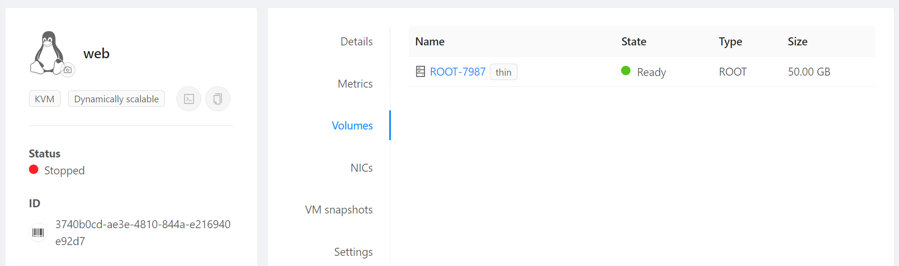
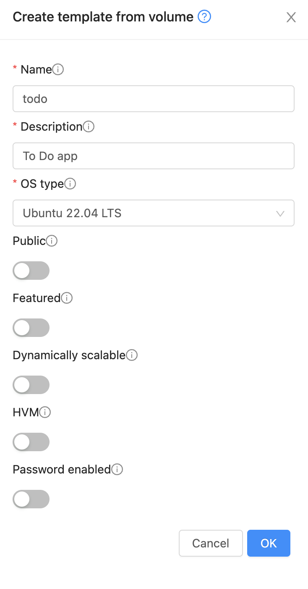
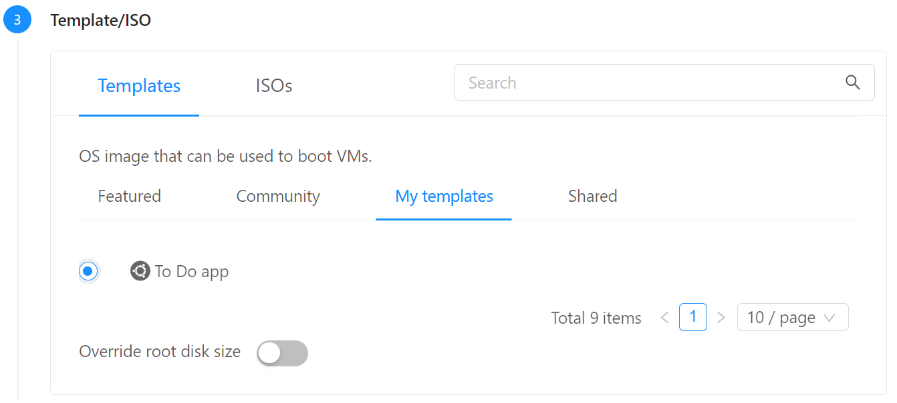
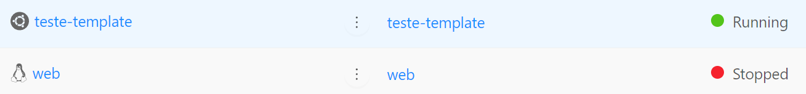
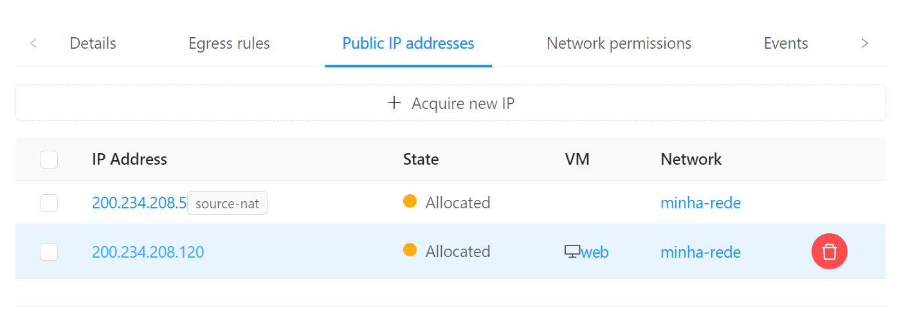
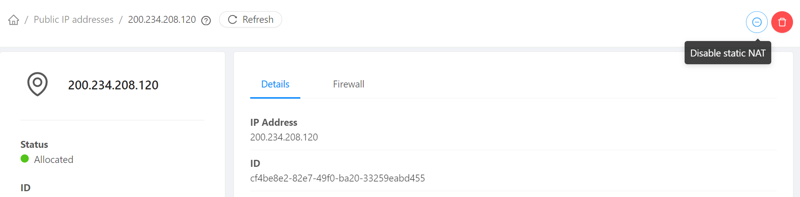
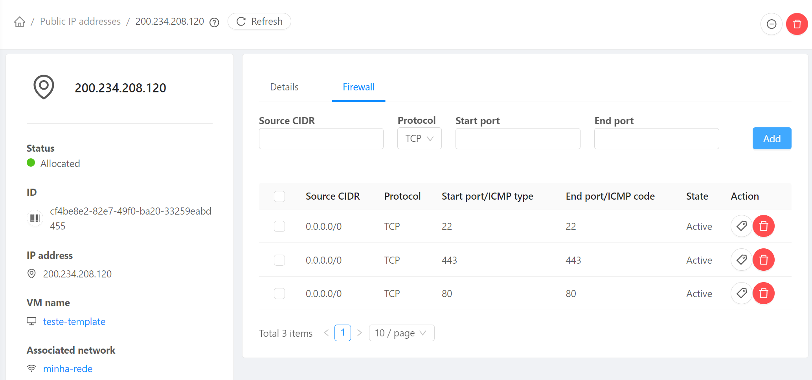

Templates
Neste passo demonstraremos como criar templates, análogos às imagens das nuvens públicas.
Utilizaremos os recursos criados no passo anterior, DR e Snapshots. Execute-o se ainda não o fez.
Instalação da aplicação
Info
O exemplo que segue é ilustrativo e a aplicação é muito simples. Mas a lógica serve para aplicações de qualquer natureza e complexidade, sejam monolitos, microsserviços, back-ends etc.
Usando o port forwarding configurado anteriormente entre via SSH no servidor web:
ssh root@200.234.208.5 -p 22000
E instale o PHP para Apache:
apt install php libapache2-mod-php php-mysql
Para testar,
cat << 'EOF' > /var/www/html/info.php
<?php
phpinfo();
?>
EOF
E acesse:
http://200.234.208.120/info.php
Agora criaremos nossa aplicação, que lista a tabela todo_list:
nano /var/www/html/todo.php
Copie o conteúdo, substituindo o endereço IP pelo do servidor bd, que pode ser lido no painel do CloudStack, e pela senha que utilizou para o banco:
<?php
$user = "example_user";
$password = "pass_bd";
$database = "example_database";
$table = "todo_list";
$host = "10.1.1.120"; // Coloque o IP privado do servidor bd no CloudStack
try {
$db = new PDO("mysql:host=$host;dbname=$database", $user, $password);
echo "<h2>TODO</h2><ol>";
foreach($db->query("SELECT content FROM $table") as $row) {
echo "<li>" . $row['content'] . "</li>";
}
echo "</ol>";
} catch (PDOException $e) {
print "Error!: " . $e->getMessage() . "<br/>";
die();
}
?>
Dica
Note que usamos o IP privado do bd, pois o servidor web o acessa pela rede privada. Com isso, não precisamos expor o bd para a rede pública.
E acesse:
http://200.234.208.120/todo.php
Página com CPU alta
Como preparação para testar o autoscaling mais adiante, criaremos uma página com a única finalidade de provocar alto consumo de CPU.
Na sessão SSH da instância web execute:
nano /var/www/html/cpu.php
<?php
$startTime = microtime(true);
for ($i = 0; $i < 1000000; $i++) {
$hash = sha1(mt_rand());
}
$endTime = microtime(true);
$duration = $endTime - $startTime;
echo "Duration: " . number_format($duration, 4) . " seconds<br>";
echo "Current Time: " . date('H:i:s');
?>
Teste a página fazendo refresh no endereço abaixo algumas vezes e vendo o resultado mudar:
http://200.234.208.120/cpu.php
Criação do template
Agora criaremos um template a partir do qual novas instâncias podem ser criadas dinamicamente.
-
Para limpar vestígios de carregamento do cloud-init:
cloud-init clean --logs -
Pare a instância web (Stop instance).
-
No menu de navegação à esquerda clique em Compute, Instances, clique na instância web e em Volumes. Clique no link do volume (ROOT-XXXX) 
- No canto superior direito, selecione Create template from volume

- Preencha da seguinte forma e dê OK: 
Recriação da instância
Agora criaremos uma nova instância a partir do template:
- No menu de navegação à esquerda clique em Compute, Instances
- Clique no botão Add instance +
- Em Templates, escolha My templates e escolha To Do app 
- Em Compute offering escolha micro (criar offers com CPU/memória fixas)
- Em Data disk mantenha No thanks
- Em Networks escolha a rede que criou, minha-rede
- Em SSH key pairs escolha a chave criada no passo anterior, por exemplo, minha-chave

- Em name coloque teste-template e clique Launch instance
- Em Compute, Instances verifique que a instância recém criada a partir do template está ligada e a anterior desligada 
- No menu à esquerda acesse Networks, Guest networks, minha-rede, Public IP addresses e clique no endereço IP que fora mapeado via Static NAT para o servidor web 
- Clique sobre o IP. Vamos desvincula-lo da instância web: 
- E agora vincule o mesmo IP à nova instância teste-template seguindo o mesmo procedimento clicando em Enable Static NAT e escolhendo-a como destino.
- Note que é necessário recriar as regras de firewall para o IP após ter sido remapeado para nova instância: 
Usando o endereço IP recém remapeado, acesse-o no browser em:
http://200.234.208.120
Acesse também as páginas, substituindo pelo endereço IP recém adquirido:
http://200.234.208.120/info.php
http://200.234.208.120/todo.php
http://200.234.208.120/cpu.php
Se seguiu os passos até aqui, tudo deve funcionar, demonstrando que o servidor criado a partir do template possui toda a programação inserida previamente.
Lembrete
Certifique-se de ter remapeado via Static NAT o endereço IP designado para a nova instância teste-template, criada a partir do template. Certifique-se de que a instância anterior web esteja desligada para ter certeza de que está acessando a nova instância criada a partir do template.